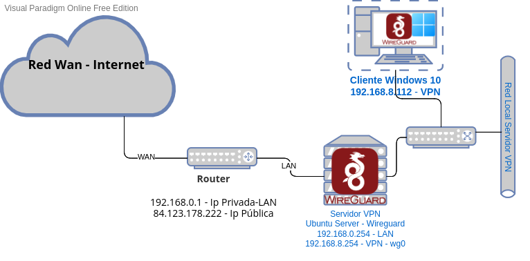
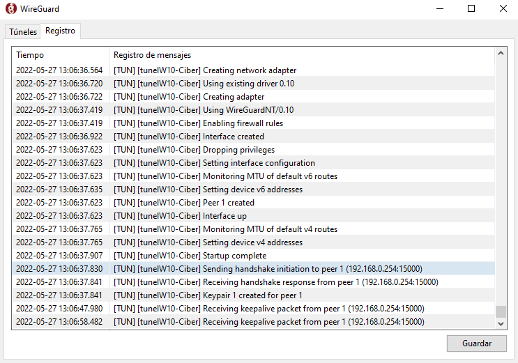
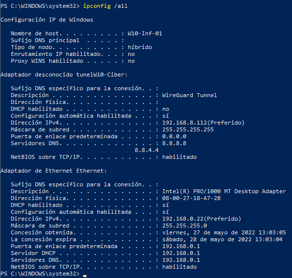
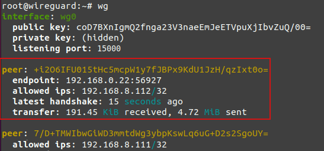
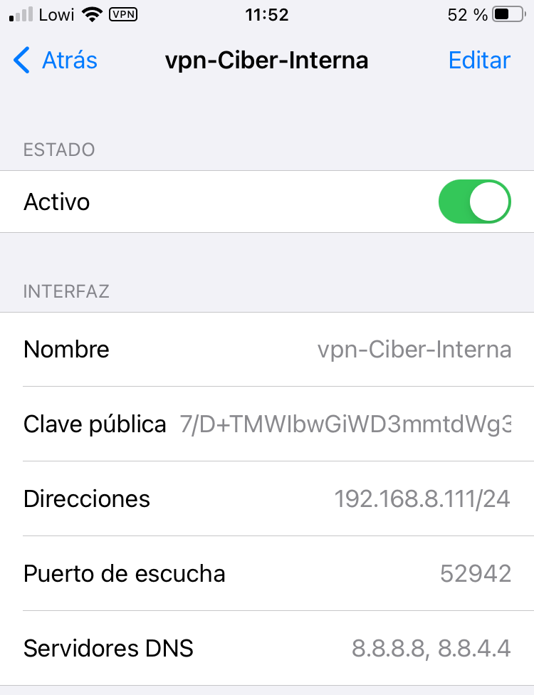
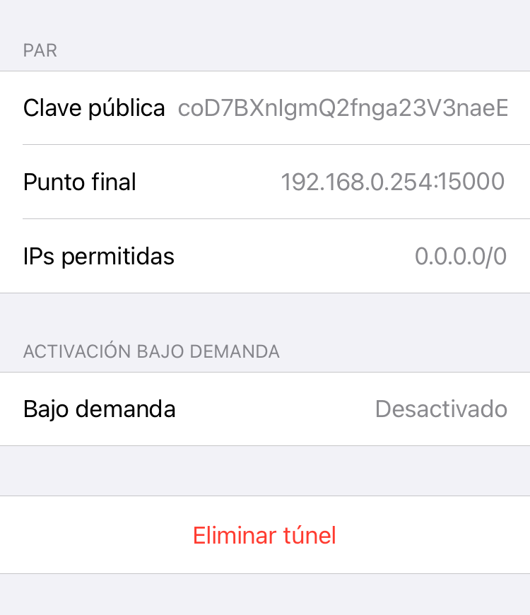
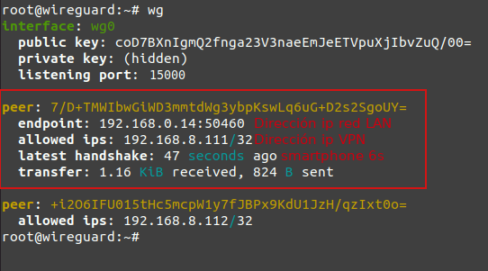

2.2.2 Escenario 1. VPN Red Interna
1. Introducción
En este escenario, se pone en producción el servidor VPN WireGuard en ubuntu server para permitir conexiones VPN en la red interna.
Los equipos que se conectarán a la VPN serán un Windows 10 y un dispositivo smartphone Iphone 6S. Una vez conectados los equipos, tendrán la capacidad de aprovechar los recursos disponibles en la red como cualquier otro equipo.
2. Recursos necesarios y escenario
- Servidor ubuntu server con Wireguard instalado.
- Router con acceso a internet.
- Smartphone Iphone 6s con WireGuard instalado.
- Windows 10 con WireGuard instalado y configurado.
El esquema de red es el siguiente

3. Conexión con Windows 10
1. Conexión
Una vez se crea un nuevo túnel configurando los parámetros del servidor y cliente, se realiza la conexión y como se puede observar en el Registro de WireGuard, se ha creado la conexión con el túnel y el equipo recibe en el adaptador del túnel la ip 192.168.8.112 y los DNS por lo que ya tiene acceso a la red interna VPN.
|  |  |
{kind=link}
2. Túnel activo
Si se observa la pestaña de Túneles de la aplicación WireGuard, ya se tiene el túnel activo transfiriendo datos y se puede acceder a internet.
3. Comprobar en servidor
Si se consulta la interfaz wg0 del servidor, se observa la conexión establecida entre el equipo Windows 10 ( 192.168.8.112) y el servidor VPN.

4. Conexión con Iphone 6S
1. Conexión
Una vez se ha creado el túnel a partir del código QR generado, se activa el mismo y se conecta el dispositivo a la red VPN interna.
El equipo se conecta internamente ya que ha obtenido una ip dentro de la subred 192.168.0.0 de la red LAN del router. La ip que obtiene de la VPN es la configurada previamente y que es: 192.168.8.111.
|  |  |
2. Túnel activo y navegación
Una vez se ha establecido la conexión VPN, ya se puede navegar desde la red interna.
{kind=link}
3. Comprobar en servidor
Si se consulta la interfaz wg0 del servidor, se observa la conexión establecida entre el dispositivo smartphone 6S ( 192.168.8.111) y el servidor VPN.

Obra publicada con Licencia Creative Commons Reconocimiento No comercial Compartir igual 4.0